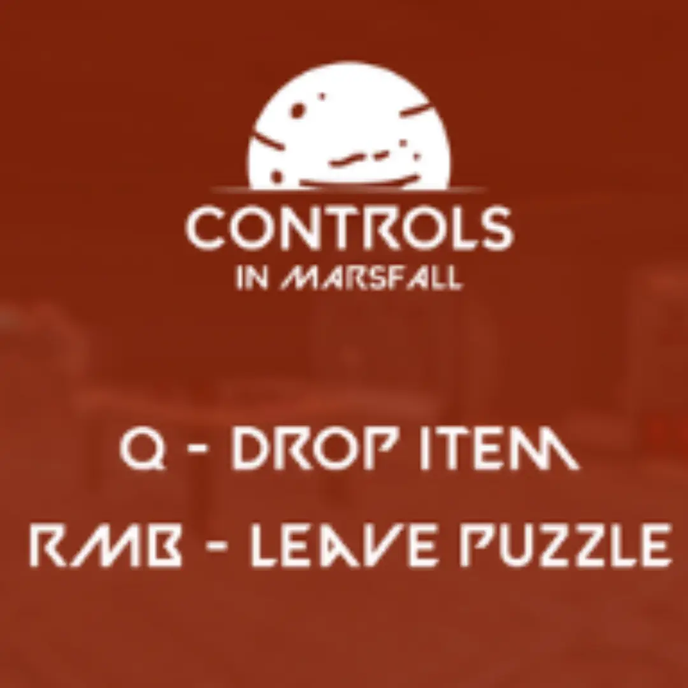
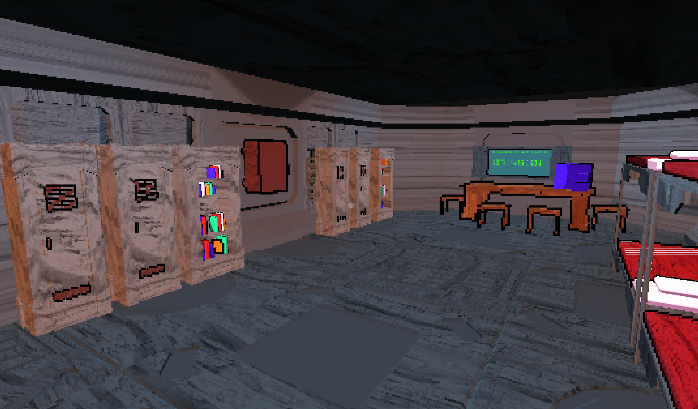

Marsfall
Industrialny sound design sci-fi dla projektu Brackeys Game Jam 2024

O Sound Designie
Wszystkie dźwięki w tej grze zostały stworzone przeze mnie i mojego przyjaciela Dawida Blacharskiego. Stworzyliśmy wciągające dźwięki industrialne, w tym rury, ambienty, kable, elektryczność i wiele więcej dla tej przygody sci-fi.
Ten projekt został stworzony na Brackeys Game Jam 2024, pokazując naszą zdolność do tworzenia klimatycznych pejzaży dźwiękowych do gier w kosmosie.

Zwiastun Gry
Gotowy na Doświadczenie Marsfall?
Zanurz się w tej klimatycznej przygodzie sci-fi i doświadcz z bliska immersyjnego sound designu.